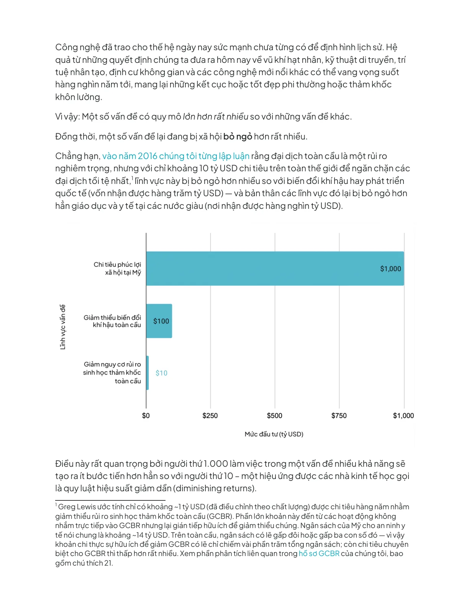
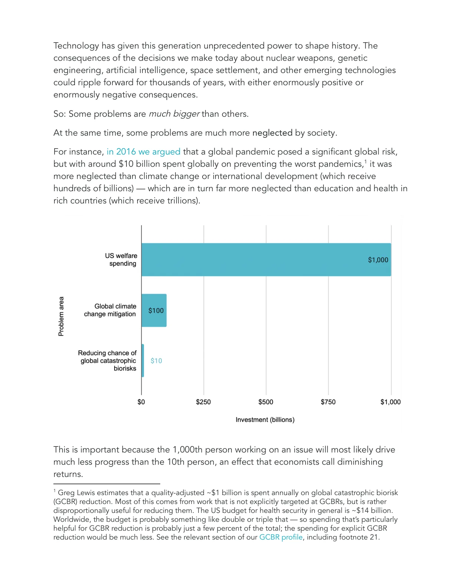
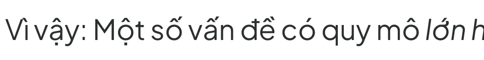
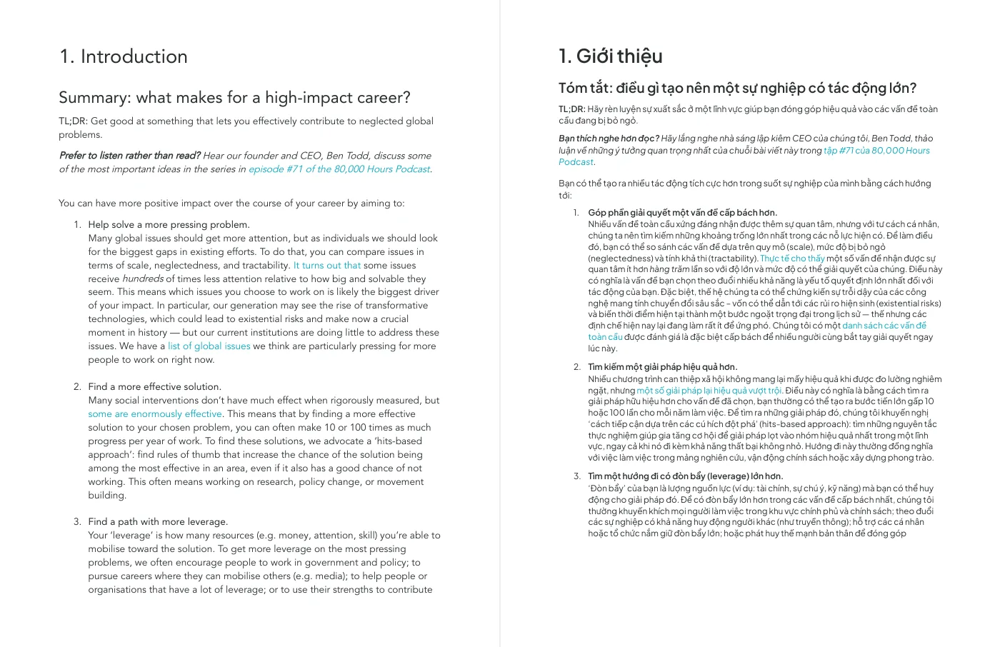

Gói kỹ năng AI · miễn phí · giấy phép MIT
Dịch PDF sang tiếng Việt, giữ nguyên từng trang
Bản dịch được dàn lại bằng chữ vector thật: vẫn bôi đen, tìm kiếm và in sắc nét. Tiếng Việt dài hơn bản gốc 12–18%, nên engine tự nới dòng, chỉnh giãn dòng rồi mới co chữ theo bậc để mọi đoạn nằm gọn trong khung cũ.


ENVIVì sao cần
Ba kiểu hỏng thường gặp khi dịch PDF
Chữ biến thành ảnh
Nhiều công cụ chụp cả trang thành ảnh rồi vẽ chữ dịch lên. Kết quả không bôi đen được, Ctrl+F không tìm thấy gì, in ra thì nhòe.
Tràn khung, đè hình
Câu tiếng Việt dài hơn câu tiếng Anh. Chép thẳng vào khung cũ thì chữ tràn lề, đè lên biểu đồ hoặc chui xuống chân trang.
Mất dấu tiếng Việt
Font của file gốc thường thiếu ký tự có dấu. Chữ “ẩ”, “ở”, “đầ” biến thành ô vuông (tofu) hoặc dấu hỏi.
Gói kỹ năng này xử lý cả ba
- Giữ lớp chữ vector. Không có trang nào bị chụp thành ảnh. Liên kết, bảng, hình minh họa giữ nguyên vị trí.
- Co giãn theo bậc. Nới bề ngang dòng tối đa 18 pt, chỉnh giãn dòng, thu khoảng cách đoạn, sau cùng mới co cỡ chữ trong khoảng 1.0 → 0.67.
- Nhúng font đủ dấu. Plus Jakarta Sans được nhúng dạng CID, kèm bước kiểm tra 0 ký tự tofu trước khi giao file.

Kiểm chứng
Mỗi file đều qua cổng kiểm định 4 tầng
Số liệu dưới đây là kết quả thật trên bản dịch thử một cuốn cẩm nang 163 trang.
| Tầng | Kiểm tra gì | Kết quả | Trạng thái |
|---|---|---|---|
| Cơ khítầng 1 | Số trang, khổ giấy, font được nhúng | 163 / 163 trang khớp · 612 × 792 pt | PASS |
| Hình họctầng 2 | Tràn lề an toàn, đè lên ảnh, khối chữ va nhau, tràn ô bảng | 0 vi phạm / 7.399 dòng chữ · 34 ảnh | PASS |
| Nội dungtầng 3 | Ký tự lỗi font, liên kết trong và ngoài | 0 tofu / 406.529 ký tự · 996 liên kết giữ nguyên | PASS |
| Trực quantầng 4 | Render đối chiếu từng trang ở 130 DPI | 9 biểu đồ đã Việt hóa nhãn | PASS |
Đầu ra
Một bản dịch, nhiều cách xuất bản
Dịch một lần, rồi chọn kiểu file phù hợp người đọc: bản tiếng Việt thuần, sách song ngữ để in, hay bản xen đoạn để học.


Video đọc sách
Xuất thẳng từ bản v3.0.1, không chỉnh sửa: Andrew đọc từng đoạn tiếng Anh, Đức Trí đọc lại đoạn tiếng Việt tương ứng. Khung chữ đang đọc chuyển màu cam ở bản gốc, xanh teal ở bản dịch, phụ đề chạy bên dưới. Có thể nhân bản giọng của chính bạn từ một đoạn ghi âm 3–8 giây.

Nghe thử giọng đọc AI
Hai câu trong trang 13, mỗi giọng một ngôn ngữ. Câu đang đọc được tô sáng như trong video.
Vì vậy: Một số vấn đề có quy mô lớn hơn rất nhiều so với những vấn đề khác. Đồng thời, một số vấn đề lại đang bị xã hội bỏ ngỏ hơn rất nhiều.
So: Some problems are much bigger than others. At the same time, some problems are much more neglected by society.
Quy trình
Bạn ra lệnh một câu, agent làm sáu bước
Ví dụ: “Dịch file bao-cao.pdf sang tiếng Việt, giữ nguyên layout, xuất thêm bản đối trang.” Agent tự chạy các lệnh dưới đây và báo lại khi xong.
Kiểm kê file gốc
Đếm trang, khổ giấy, font, ảnh, bảng, liên kết. File gốc chỉ được đọc, không bị sửa.
python scripts/cli.py inspect --source book.pdfDịch và giữ thuật ngữ
Dịch theo lô 20–25 trang, giữ in đậm, in nghiêng, chỉ số trên và đích liên kết. Lập bảng thuật ngữ để cả cuốn dùng thống nhất.
# agent ghi ra data/translations.jsonViệt hóa biểu đồ
Lấy màu nền quanh nhãn tiếng Anh, xóa nhãn cũ, ghi nhãn tiếng Việt cùng font, xoay được nhãn trục 90°.
python scripts/figure_localizer.py --image chart.pngDàn trang vector
Ghép bản dịch vào đúng vị trí cũ, co giãn theo bậc. Chọn đơn ngữ hoặc song ngữ.
python scripts/cli.py translate-mono --source book.pdf \ --trans data/translations.json --out output/book_VI.pdfGiọng đọc AI (tùy chọn)
Tổng hợp giọng đọc cho từng câu, hoặc nhân bản giọng từ mẫu 3–8 giây.
python scripts/cli.py voice synth --lang vi --voice "Đức Trí"Video đọc sách (tùy chọn)
Dựng video 1080p, tô sáng đoạn đang đọc theo đúng khung chữ trên trang.
python scripts/cli.py video --mode bilingual --out video.mp4
QACổng kiểm định chạy sau cùng. Nếu còn vi phạm lề hoặc ký tự lỗi, agent đọc tọa độ lỗi trong báo cáo và tự sửa trước khi giao file.
Tương thích
Chạy trên ba nền tảng AI
Email hướng dẫn sẽ gửi đúng các bước cho nền tảng bạn chọn khi đăng ký.
| Tính năng | AntigravityIDE · máy của bạn | Claude CodeCLI · máy của bạn | ChatGPTCustom GPT · trên mây |
|---|---|---|---|
| Dịch đơn ngữ giữ bố cục | Có | Có | Có* |
| Song ngữ đối trang, xen đoạn | Có | Có | Có* |
| Việt hóa nhãn biểu đồ | Có | Có | Có* |
| Giọng đọc AI, video 1080p | Có | Có | Không |
| Sách trên 100 trang | Theo lô 20–25 trang | Theo lô 20–25 trang | 10–20 trang mỗi lượt |
| Cách cài | Chép thư mục vào skills | Gõ claude trong thư mục | Dán Instructions vào Custom GPT |
* Trên ChatGPT, GPT dựng lại quy trình theo đặc tả trong Code Interpreter. Mỗi lượt chạy giới hạn khoảng 60–120 giây và sandbox thiếu ffmpeg, nên chất lượng phụ thuộc từng phiên. Tài liệu dài nên dùng Claude Code hoặc Antigravity.
Nhận gói kỹ năng
Để lại email, nhận gói kỹ năng và hướng dẫn cài
- zippdf-translation-layout-v3.0.1.zip550 KB, 39 tệp: script, font, đặc tả, hướng dẫn cho 3 nền tảng.
- 1·2·3Các bước cài cho đúng nền tảng của bạnKèm câu lệnh chạy thử đầu tiên để biết đã cài đúng.
- v+Báo khi có phiên bản mớiChỉ khi bạn chọn nhận. Vài lần mỗi năm, không quảng cáo.
Email gửi từ hello@huynhanhthuan.com, thường đến trong 1–2 phút. Không thấy thì xem thêm mục Quảng cáo hoặc Spam.
Đã nhận đăng ký
Gói kỹ năng đang trên đường tới hộp thư của bạn.
Đây là bản xem trước: trang chưa kết nối máy chủ nên chưa có email nào được gửi.
Trong lúc chờ: nếu gói kỹ năng giúp bạn tiết kiệm thời gian, mời mình một ly cà phê.
Give me a coffee
Mời mình một ly cà phê
Gói kỹ năng miễn phí và sẽ tiếp tục miễn phí. Nếu nó giúp bạn bớt vài buổi tối ngồi chỉnh từng dòng chữ, một ly cà phê là lời cảm ơn mình rất trân trọng. Khoản ủng hộ dùng để duy trì và làm các phiên bản tiếp theo.
- Ngân hàng
- Vietcombank
- Chủ tài khoản
- HUỲNH ANH THUẬN
- Số tài khoản
- 0161001623062
- Nội dung
- UNG HO PDF LAYOUT
Quét bằng app ngân hàng bất kỳ có hỗ trợ VietQR.
Hỏi đáp
Câu hỏi thường gặp
Có thật sự miễn phí không?
Có. Gói kỹ năng phát hành theo giấy phép MIT: bạn được dùng, sửa và chia sẻ, kể cả cho công việc có thu nhập. Ủng hộ cà phê là hoàn toàn tự nguyện.
Tôi không biết lập trình, có dùng được không?
Được, nếu bạn dùng Claude Code hoặc Antigravity. Bạn ra lệnh bằng tiếng Việt, agent tự chạy các câu lệnh. Bạn chỉ cần cài Python 3.10 trở lên một lần, email có hướng dẫn từng bước.
Tài liệu của tôi có bị gửi đi đâu không?
Các script chạy trên máy của bạn. Phần dịch do AI bạn đang dùng (Claude, Gemini hoặc ChatGPT) thực hiện, nên nội dung đi qua nhà cung cấp AI đó theo chính sách của họ. Trang web này không nhận và không lưu tài liệu của bạn.
File PDF nào dịch được?
PDF có lớp chữ, tức là bạn bôi đen được chữ trong file. PDF scan dạng ảnh chụp cần chạy nhận dạng chữ (OCR) trước, phiên bản này chưa làm bước đó.
Đăng ký rồi mà chưa thấy email?
Tìm thư từ hello@huynhanhthuan.com, kể cả trong mục Quảng cáo hoặc Spam. Nếu hôm đó số người đăng ký vượt hạn mức gửi trong ngày, hệ thống tự gửi cho bạn trong vòng 24 giờ. Vẫn không thấy thì gửi email tới hello@huynhanhthuan.com.
Tôi có được dịch sách đang có bản quyền không?
Công cụ không thay đổi quyền tác giả của tài liệu gốc. Bạn tự chịu trách nhiệm về quyền sử dụng tài liệu mình dịch; muốn chia sẻ hoặc phát hành bản dịch, bạn cần sự cho phép của chủ sở hữu.